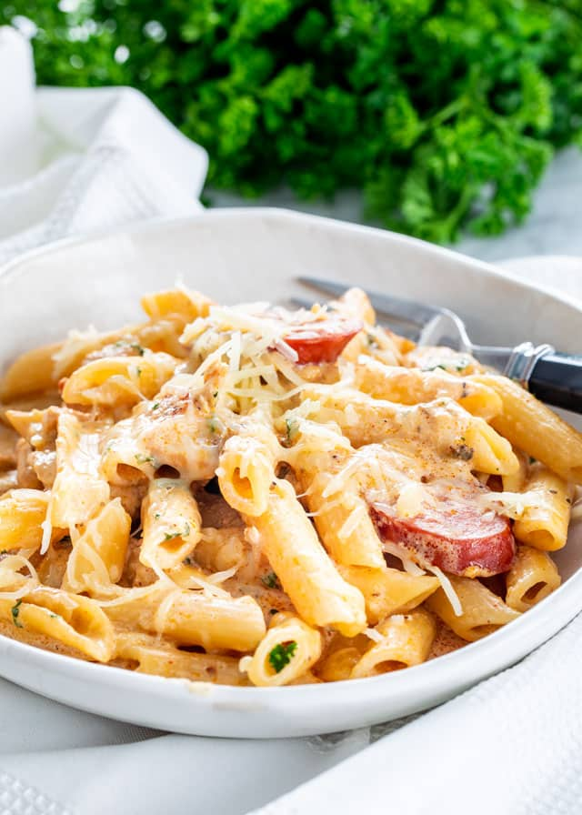

Cajun Chicken Pasta

Description:
Prep: 20 mins
Cook: 20 mins
Total: 40 mins
Servings: 2
Yield: 2 servings
Nutrition Facts: Per Serving: 935 calories; protein 43.7g; carbohydrates 54g; fat 61.7g; cholesterol 270.8mg; sodium 1189.2mg.
Ingredients:
- 4 ounces linguine pasta
- 2 skinless, boneless chicken breast halves
- 2 teaspoons Cajun seasoning
- 2 tablespoons butter
- 1 red bell pepper, sliced
- 1 green bell pepper, sliced
- 4 fresh mushrooms, sliced
- 1 green onion, chopped
- 1 cup heavy cream
- ¼ teaspoon dried basil
- ¼ teaspoon lemon pepper
- ¼ teaspoon salt
- ⅛ teaspoon garlic powder
- ⅛ teaspoon ground black pepper
- ¼ cup grated Parmesan cheese
Steps:
- Bring a large pot of lightly salted water to a boil. Add pasta and cook for 8 to 10 minutes or until al dente; drain.
- Place the chicken and the Cajun seasoning in a plastic bag. Shake to coat. In a large skillet over medium heat, saute the chicken in butter or margarine until almost tender (5 to 7 minutes).
- Add the red bell pepper, green bell pepper, mushrooms and green onion. Saute and stir for 2 to 3 minutes. Reduce heat.
- Add the cream, basil, lemon pepper, salt, garlic powder and ground black pepper. Heat through. Add the cooked linguine, toss and heat through. Sprinkle with grated Parmesan cheese and serve.